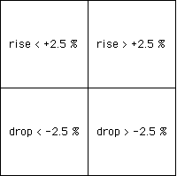

| Wu analyzed the individual markets, applying the transformations
in this fashion. |
| If the market drops more than 2.5% of its value, apply T1 |
| If the market drops less than 2.5% of its value, apply T2 |
| If the market rises less than 2.5% of its value, apply T3 |
| If the market rises more than 2.5% of its value, apply T4 |
|
| That is, in relation to the driven IFS |
|  |
| With this binning of the data (just a version of
zero-centered
bins), here are the driven IFS for the TAIEX
and the SSE. |
|
|
| Several consequences are easily read from this graph. |
| (1) The SSE fluctuations are more often in the 2.5% or
under range because the diagonal trend is strong and few points lie in squares
1 and 4. |
| (2) The TAIEX has more off-diagonal points, hence more fluctuations outside the 2.5%
range. |
| (3) The relative populations of the TIAEX 41 abd 14 squares is interesting, but care must be
exercised with the interpretations, because the data were entered from the present to the
past. So a relatively large number of points in the 14 square means a large fall often
was followed by a large rise. The near emptiness
of the 41 subsquare means large gains were only rarely followed by large losses. |